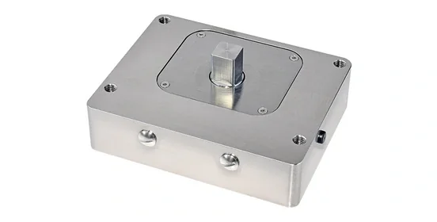
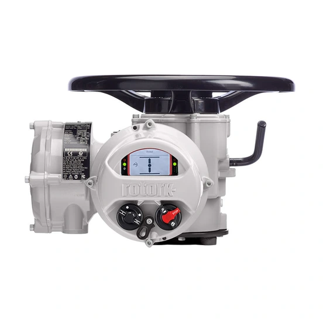
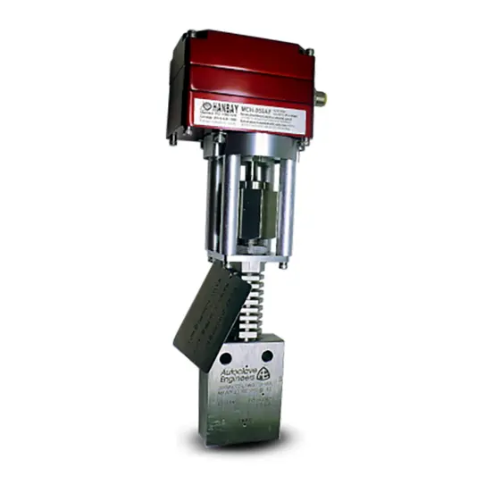
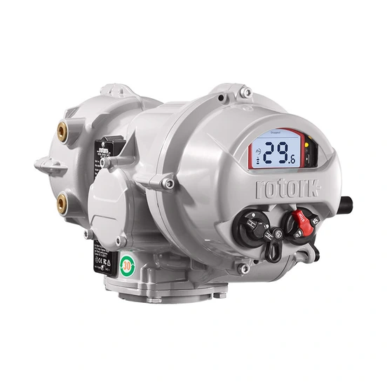

Tự động hóa đóng/mở và điều tiết van trong lọc dầu, hóa chất, xử lý khí.
ROTORK · MAX RANGE
VDWB-M Rotork
VDWB-M Variable angle of rotation limiter for ...Max actuators size M

Ảnh sản phẩm chính thứcTỔNG QUAN MÃ VDWB-M
VDWB-M – Bộ truyền động van (valve actuator) Rotork
VDWB-M Variable angle of rotation limiter for ...Max actuators size M
VDWB-M thuộc range Max của Rotork, dùng cho tự động hóa và điều tiết van công nghiệp. Fast Group Engineering — đơn vị phân phối Rotork chính hãng tại Việt Nam — cung cấp VDWB-M là hàng chính hãng, xuất xứ châu Âu, đầy đủ CO/CQ kèm hỗ trợ kỹ thuật lựa chọn cấu hình và báo giá.
Lưu ý mã hàng
Chưa có mã đặt hàng hoàn chỉnh từ nguồn chính thức; không dùng model_code thay cho part number.
XUẤT XỨ & CHỨNG TỪ
VDWB-M — hàng chính hãng, xuất xứ châu Âu, đầy đủ CO/CQ
Thương hiệuRotork · Anh Quốc / Châu Âu
Chứng từCO + CQ theo từng lô
Nhà phân phốiFast Group Engineering · VN
VDWB-M do Fast Group Engineering — đơn vị phân phối Rotork chính hãng tại Việt Nam — cung cấp là hàng chính hãng thương hiệu Rotork (trụ sở tại Anh Quốc, châu Âu). Mỗi lô VDWB-M đi kèm chứng nhận xuất xứ (CO) và chứng nhận chất lượng (CQ); xuất xứ cụ thể được xác nhận trên CO theo từng lô. Chúng tôi không suy đoán part number và đối chiếu cấu hình theo dữ liệu chính thức Rotork trước khi báo giá.
THÔNG SỐ ĐỊNH HƯỚNG
Đặc điểm kỹ thuật chính
Các giá trị mô tả phạm vi model. Datasheet của cấu hình được chọn là căn cứ cuối cùng.
01VDWB-M Variable angle of rotation limiter for ...Max actuators size M
ỨNG DỤNG
Ứng dụng tiêu biểu của VDWB-M
VDWB-M là bộ truyền động van (valve actuator) Rotork của Rotork, dùng trong tự động hóa và điều tiết van công nghiệp.
Điều khiển van trong nhà máy điện, xử lý nước, khử mặn và cấp thoát nước.
Tích hợp điều khiển van cho nhà máy process, tự động hóa và giám sát.
VDWB-M (bộ truyền động van (valve actuator) Rotork) được chọn theo kiểu van, dải mô-men/thrust, nguồn điện và enclosure của dự án.
TÀI LIỆU KỸ THUẬT
Tài liệu kỹ thuật VDWB-M
LoạiMã tài liệuTên tài liệuTải
Product BrochurePUB113-387PUB113-387 - VDWB - M - English↓ English
Cần thêm tài liệu (datasheet cấu hình, drawing, certificate, wiring diagram…)? Liên hệ Fast Group để nhận đúng theo cấu hình đơn hàng.
HỎI & ĐÁP
Câu hỏi thường gặp về VDWB-M
Chính hãng, xuất xứ, CO/CQ, tài liệu và báo giá — những điều khách hàng thường hỏi.
VDWB-M là sản phẩm Rotork loại nào và dùng cho ứng dụng gì?
VDWB-M là bộ truyền động (bộ truyền động van (valve actuator) Rotork) thuộc range Max của Rotork, dùng cho tự động hóa và điều tiết van công nghiệp. VDWB-M Variable angle of rotation limiter for ...Max actuators size M
VDWB-M khác gì các mã còn lại trong range Max?
Trong range Max, VDWB-M có bộ truyền động van (valve actuator) Rotork. Các mã còn lại gồm: DWB (cấu hình khác), ExMax (part-turn), HV (cấu hình khác), InMax (part-turn), KB-A (cấu hình khác), KB-S (cấu hình khác), RedMax (part-turn), WS-M (cấu hình khác). Việc chọn mã phụ thuộc kiểu van, dải làm việc và yêu cầu kỹ thuật — Fast Group hỗ trợ chọn đúng mã theo dữ liệu dự án.
VDWB-M Fast Group cung cấp có phải Rotork chính hãng, xuất xứ châu Âu không?
Đúng. VDWB-M là hàng chính hãng thương hiệu Rotork (trụ sở Anh Quốc, châu Âu), do Fast Group Engineering — nhà phân phối Rotork chính hãng tại Việt Nam — cung cấp. Xuất xứ được xác nhận trên CO theo lô.
Mua VDWB-M có đầy đủ CO/CQ không?
Có. Mỗi lô VDWB-M kèm CO (chứng nhận xuất xứ) và CQ (chứng nhận chất lượng), phục vụ hồ sơ nghiệm thu và đấu thầu của nhà máy, dự án.
Tài liệu kỹ thuật của VDWB-M gồm những gì?
VDWB-M có sẵn tài liệu từ nguồn chính thức Rotork: Product Brochure. Fast Group gửi kèm tài liệu phù hợp khi báo giá và hỗ trợ đối chiếu revision.
Cần cung cấp thông tin gì để báo giá VDWB-M nhanh nhất?
Gửi cho Fast Group: mã VDWB-M (hoặc ảnh nameplate), số lượng, thời gian cần hàng, điều kiện vận hành và yêu cầu chứng từ (CO/CQ). Chúng tôi phản hồi giá và lead time.
KIẾN THỨC LIÊN QUAN
Xem thư viện →Đọc thêm để chọn đúng cấu hình

01Cách đọc nameplate Rotork tại Việt Nam | Fast Group Engineering
Khi cần báo giá hoặc thay thế actuator Rotork, việc đầu tiên không phải là tìm mã tương đương trên mạng mà là đọc đúng nameplate trên thiết bị. Nameplate chứa manufacturer, range/model, order code (part number) và serial number — bốn lớp dữ liệu dễ bị nhầm lẫn
Đọc bài viết →
02Part number Rotork là gì? Phân biệt part number, model, range
Truy vấn "part number Rotork" thường xuất phát từ một tình huống cụ thể: cần báo giá thiết bị thay thế nhưng chỉ có một chuỗi ký tự chưa rõ là model hay part number đầy đủ. Nhầm hai khái niệm này khiến báo giá sai cấu hình hoặc chậm tiến độ vì phải hỏi lại nhi
Đọc bài viết →
03Mua actuator Rotork chính hãng tại Việt Nam: checklist đặt hàng
Rủi ro lớn nhất khi mua actuator không phải là giá, mà là chọn sai cấu hình rồi phát hiện sau khi hàng đã về công trường. Actuator Rotork có nhiều range (IQ3 Pro, IQT3 Pro, CK, CMA, Skilmatic SI...) với cách chọn khác nhau theo loại chuyển động, tải trọng và m
Đọc bài viết →MODEL LIÊN QUAN
Xem toàn bộ Max →Tiếp tục so sánh trong range
VDWB-M · REQUEST FOR QUOTATION
Gửi RFQ VDWB-M →
Cần báo giá VDWB-M chính hãng kèm CO/CQ?
Gửi nameplate, dữ liệu van và điều kiện vận hành cho Fast Group Engineering.